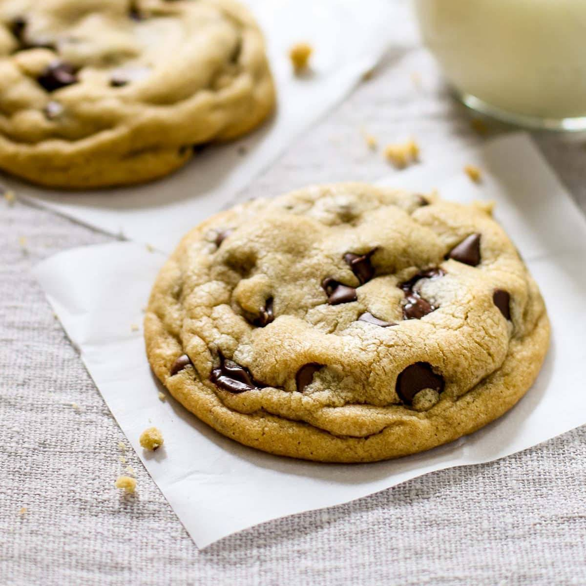

Chocolate Chip Cookies
Just your plain old, regular, underrated chocolate chip cookies...

Summary
- Preparation time: ~10 minutes
- Cooking time: ~10 minutes
- Servings: ~4
Ingredients
- 230g of melted butter (~2 sticks)
- 330g of bread flour
- 5g of salt
- 100-200g of white sugar
- 100-200g of brown sugar
- 1 egg
- 5g of vanilla (extract???)
- 225g of 50-70% dark chocolate chips or semi-sweet milk chocolate chips (don't want to get too chonky, now...)
Directions
- Preheat the oven to 375°F
- Mix the flour, baking soda, and salt in a bowl
- Using a mixer or whisk, beat the butter, sugar, eggs, vanilla and milk in a separate bowl for a few minutes
- Combine and stir in the dry ingredients, then the chocolate chips
- Use an ice cream scooper or spoon to make uniform balls of cookie dough to the size you like and evenly space them out on a parchment paper lined baking sheet (you may need more than one sheet depending on the size of the cookies)
- Bake in the oven one baking sheet at a time for around 8-10 minutes, taking them out when they start to brown
- Cool for a few minutes and then put them on a cooling rack
Original Source: based.cooking